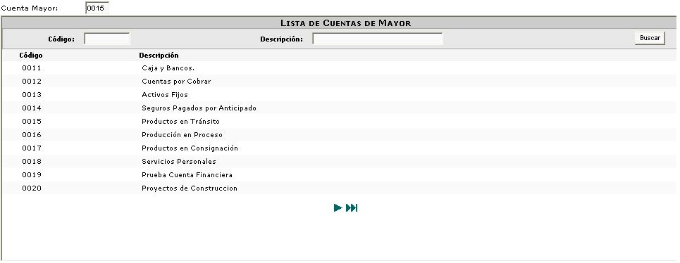
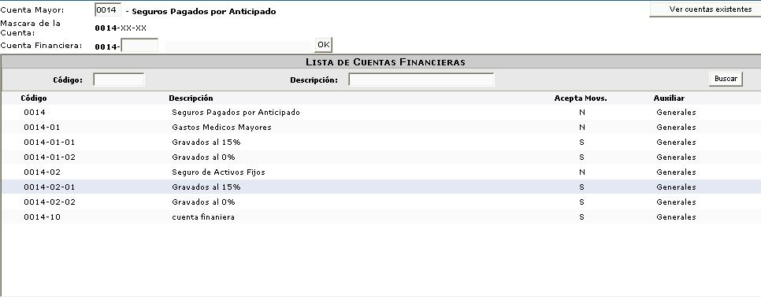

Genera la consulta de las cuentas financieras, ingrese los parámetros código y/o descripción para realizar una búsqueda de una cuenta específica.

Figura 1. Consulta de cuentas financieras.
Una vez que encuentre la cuenta padre puede consultar las cuentas hijas de la misma haciendo click sobre la ella en la lista.

Figura 2. Consulta de cuentas financieras hijas.